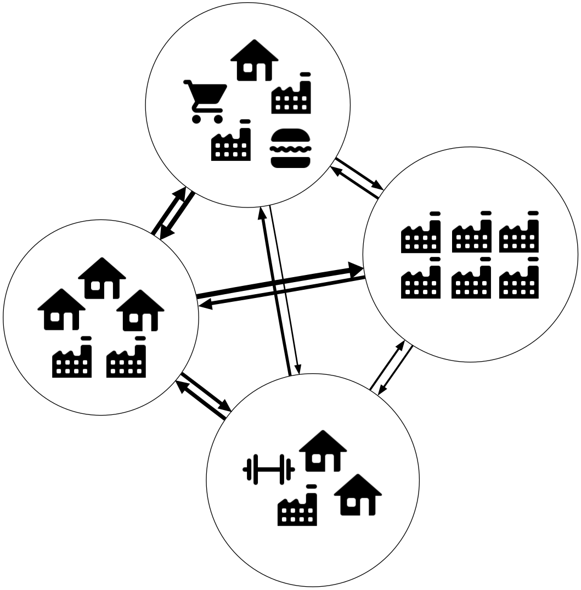
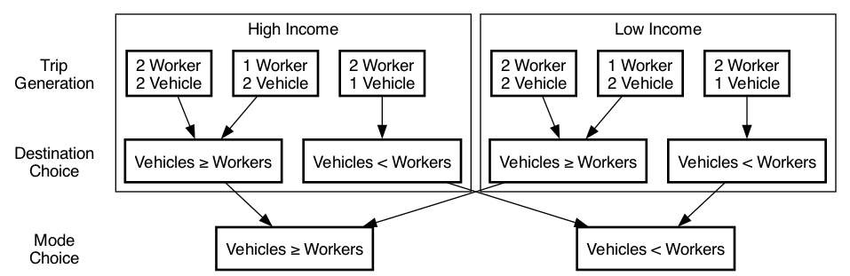
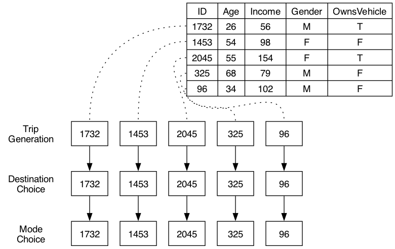
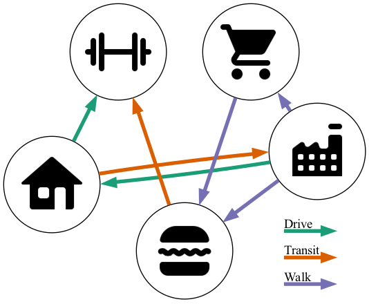
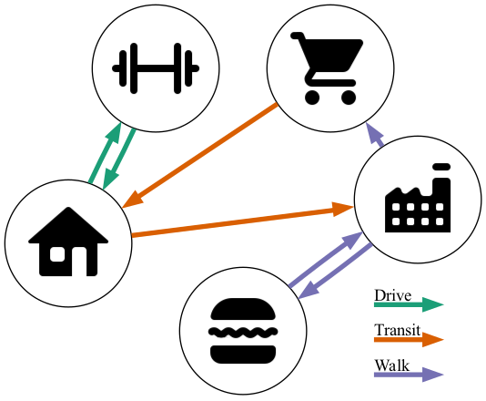

2 Literature Review
Travel demand modeling in the modern sense has its origins in the 1950’s, with the Chicago Area Transportation Study (Chicago Area Transportation Study 1959) being one of the first urban planning studies to use the now-ubiquitous “four-step” modeling framework (McNally 2007). Up to this point, most urban transportation planning used existing demand or uniform-growth travel forecasts to model travel demand, but the Chicago Study used a combination of trip generation, trip distribution, modal split, and network assignment models to more accurately represent travel behavior (Weiner 1997). Since then, there have been numerous studies iterating on the “four-step” (more appropriately termed “trip-based”) framework, and trip-based models are now the primary tool used in forecasting travel demand across the United States (Park et al. 2020).
These trip-based models are not without problems, however. Rasouli and Timmermans (2014) give several shortcomings of trip-based models. First, they use several sub-models that are (implicitly or explicitly) assumed independent, and this can result in a lack of consistency or integrity between sub-models; for example, the assumed value of time in the mode choice model might be radically different than the assumed value of time in the tolling assignment model. Second, they are strongly aggregated in nature, which can cause significant aggregation bias with high and low values excluded. Finally, they lack “behavioral realism”—that is, they do not have a concept of individuals making decisions, which is what travel behavior actually is.
Jones (1979) proposed an alternative to the trip-based paradigm, namely an “activity-based” framework that models daily activity patterns at an individual rather than aggregate level. An activity-based model (ABM) places the focus on “activities” rather than “trips” as the basic unit of analysis, and predicts a sequence of activities for each individual and household, with information such as activity location, start time, and duration, using a high level of temporal and spatial granularity. “Trips” are then journeys from one activity to the next (Pinjari and Bhat 2011). By adopting this activity-centric framework, ABMs provide a more consistent and comprehensive representation of travel behavior. They take into account complex dependencies and interactions within the model as a whole and at an individual level. ABMs acknowledge that travel choices are not made in isolation, but rather influenced by the preceding activities. This means that e.g. if an individual takes transit to work, they will not be able to drive home. ABMs therefore present a more conceptually accurate model of actual travel behavior than traditional trip-based models.
Despite these advantages, many agencies have yet to adopt ABMs, and instead continue to use trip-based models (Miller 2023). While ABMs are superior in certain aspects, they also have disadvantages, such as requiring more detailed input data and greater computational resources. It is also not always clear if ABMs provide substantially better forecasts than their trip-based counterparts, nor if this tradeoff is worth it for every agency. This literature review presents an overview of both modeling frameworks, and discusses the advantages and disadvantages of using an ABM.
2.1 Overview of Model Types
Trip-based models are often referred to as “four-step” models due to their four fundamental sub-models: trip generation, trip distribution, mode choice, and network assignment (National Academies 2012, 28). They can be more complicated than this, possibly including integration with a land use forecast, iteration between mode and destination choice, etc., but the “four steps” are the central component of any of these models (McNally 2007).
In a typical trip-based model, travel demand is predicted based on aggregate population data, often delineated by each transportation analysis zone (TAZ). Each sub-model relies on this aggregate data; for example, the modal split sub-model will often use average TAZ income as an input (National Academies 2012, 14). The aggregate data is also often “disaggregated” and segmented along variables such as household size and vehicle ownership. Regardless of the segmentation variables used in the first three model steps, the resulting trip matrices by mode and time of day are then assigned to a transportation network (there are various algorithms for doing so, see Ortúzar and Willumsen (2011)).
Activity-based models differ significantly from this approach. Rather than using aggregate data, ABMs use data representing an actual or synthetic population, with individual person and household data (Vovsha, Bradley, and Bowman 2005). These models use an activity or tour scheduler to assign a daily activity pattern (DAP) of zero or more tours to each individual (n.b. a tour is a series of trips that begin and end at home). These DAPs are restricted temporally, spatially, and modally; i.e., each person has a logical and followable sequence of trips and activities (Bowman 1998). A “drive alone” trip from work to lunch, for example, cannot be made if transit was taken to work. ABMs output a list of tours and trips by person, time, location, and type, and these can then be assigned to a transportation network in a similar manner as in a trip-based model.
2.2 Comparison of Modeling Frameworks
In discussing the differences between ABMs and trip-based models, there are really two comparisons that need to be made: how the population data is structured, and how travel is organized. Trip-based models generally use aggregate population data while ABMs use a synthetic population, and trip-based models organize travel into trips while ABMs organize travel into activities and tours. The following sections will explain these aspects of travel demand modeling and discuss the claimed advantages and disadvantages of each model type.
2.2.1 Population Data
The aggregate population data used in trip-based models can vary in origin and level of detail, but the basic concept is the same: the study area is organized into generally small zones, and certain demographic and socioeconomic data is known or obtained for each zone (National Academies 2012, 14). This includes data such as number of households, average household income, population, number of workers, etc. Based on this information, the zone can be segmented along arbitrary variables. For example, since households with more workers and more vehicles tend to make more work trips, it is useful to estimate the distribution of households in each zone along these two variables. Then, average trip production rates are determined for each household category (e.g. for households with each number of workers by vehicles), and the total number of trips produced in a zone is calculated based on these rates (National Academies 2012, 37).
This approach is relatively straightforward: the required input data is usually easy to obtain, the trip generation models are often simple, and it is computationally inexpensive (National Academies 2012). However, the types of analyses possible are limited by the initial segmentation of the aggregate population data. An analysis based on parents’/adults’ highest received education, for example, would require determining the number of households in each TAZ with each possible combination of education level. This can theoretically be done, but more detailed and varied analyses would require more levels of segmentation, greatly increasing the number of classifications needed. Aggregation at any point precludes that segmentation from use in subsequent model steps as well as in any post-hoc analysis. Since these segmentations need to be carried through each model step, trip rates, mode choice equations, etc. need to be estimated for every classification, and while relevant real-world data may exist, sample sizes approach zero very quickly, and so the estimates have little statistical value (Moeckel et al. 2020; National Academies 2012).
This becomes a particular issue in equity analysis because it is perhaps impossible to determine equitable distribution of “winners” and “losers” of a potential policy without using demographic variables in the trip generation and destination and mode choice steps (Bills and Walker 2017). Though many studies have shown that trip production and mode choice behavior differ by ethnic group even after controlling for income (cite?), including such variables in trip-based models is problematic. Does coding such a variable in a mode choice model represent discrimination? Or does doing so assert that present differences resulting from unequal opportunity will persist into the future planning years? Regardless the reasons for their exclusion, these variables consequently cannot be used in a post-hoc analysis of a transportation policy because the trip matrices do not contain the adequate segmentation.
An alternative approach to population data is to use a full synthetic population. A synthetic population takes demographic and socioeconomic data at various levels of detail to create a “population” with generally the same distribution as the study area (National Academies 2012, 93). The goal is to have a population that is functionally similar to the actual population, but without the privacy concerns of using real individual household data. Castiglione et al. (2006) argue that the major advantage with this approach is that the demographic and socioeconomic data is known at the person and household level, rather than the zone level, and this data remains available throughout the modeling process. This allows, for example, an equity analysis to determine the “winners” and “losers” of a proposed development without needing to encode demographic variables into each step of the model.
Bills and Walker (2017) used the 2000 Bay Area Travel Survey to create a synthetic population and compare the effects that certain scenarios had on high income and low income populations. With a 20% reduction in travel cost, they found that high income workers benefited more than low income workers. They did similar comparisons for scenarios involving reduced travel times for different mode choices and saw the effects each scenario had on the high and low income workers. These types of analysis, which are not possible with aggregate population data (this is actually possible; a lot of trip-based models segment high/low income), can be very valuable in transportation planning and policy making.
It is important to note that while many connect them only with ABMs, synthetic populations can be used in running trip-based models as well. Trip-based models using a synthetic population—often called trip-based microsimulation models—do exist (see Walker (2005) and Moeckel et al. (2020)), but these are relatively rare.
Figure 2.1 gives a visualization of an example “information pipeline” for a trip-based model using aggregate data and an ABM using a synthetic population. In the aggregate data model, it is impossible to know which trips are made by e.g. 2-worker, 1-vehicle, low-income households; it only describes which trips are made by households with fewer vehicles than workers. With a synthetic population, however, individuals are being modeled, and so each trip can be traced to a specific person. All information is known at each point in the model regardless of which data is used in previous steps.


2.2.2 Travel Behavior
The other primary difference between trip-based models and ABMs—and the main difference from trip-based microsimulation models—is that ABMs organize travel into “tours”, a sequence of trips that begin and end at the home, rather than just trips. It should be noted that Miller (2023) argues that many current “activity-based” models ought to be labeled “tour-based” due to this focus on building tours. This is contrasted with “activity scheduling” models, in which activity participation is modeled explicitly and trips emerge as the means to get from one activity to the next. However, in practice there are few true “activity scheduling” models, and the term “activity-based” is used to refer to both activity scheduling and tour-based models.
In a typical trip-based model, trips are forecasted based on empirical trip rates, usually by trip purpose and by household type (for example, low-income, 1-vehicle households make a certain number of “home-based work” trips) (McNally 2007). These trips are then assigned an origin and destination, mode, and often a time of day (peak/off-peak, etc.), resulting in a list of trips between each zone by mode and purpose. A trip-based microsimulation model may use regression models rather than aggregate data for some of the model steps (Moeckel et al. 2020), but the end result is similar: a list of trips by person, noting mode and purpose. However, this trip list may be inconsistent, and the forecasted trips may not be physically possible to complete in any sequence, as there is no sense of “trip-chaining”. The hope, though, is that over an area the inconsistencies would cancel out, leaving an overall accurate forecast.
ABMs, on the other hand, model tours rather than trips. This attempts to create consistency in trip origins/destinations, mode choice, and time of day: since each trip is a part of a “chain” (tour), the trips within a tour are dependent on each other (Rasouli and Timmermans 2014). The open-source ABM ActivitySim (Association of Metropolitan Planning Organizations 2023), for example, has a tour-scheduling model that determines the number of “mandatory” (work, school, etc.) and “discretionary” tours each individual will make, and performs tour-level mode and destination choice for each tour. After the tour-level decisions are made, trip-level mode/destination choice is done for each trip in the tour, including the possible addition of subtours (see Vovsha, Bradley, and Bowman (2005), fig. 18.1).
Figures 2.2 and 2.3 show an example of the trips assigned to a network in the various model forms. Figure 2.2 depicts network assignment in a typical trip-based model where the total number of trips between each zone is given. With these results, the mode and purpose of each trip is known, but, with aggregate data, there is no way of telling who made which trips other than the segmentation in the previous steps (see Figure 2.1 (a)). It is also not possible to construct a coherent daily list of trips for individuals.
Figure 2.3, on the other hand, depicts visual representations of an individual’s travel made possible by the use of a synthetic population. Figure 2.3 (a) depicts the trip list that could be given for an individual in a trip-based microsimulation model. Though each individual’s trips are known, there is no guarantee of consistency between trips. For example, it could predict that the individual takes transit to work but then drives home or that the individual makes two recreational trips without ever making a return trip. The activity-based approach, depicted in Figure 2.3 (b), attempts to add this consistency by modeling tours, and only generating trips consistent with each tour.


In addition to intra-person dependencies, Rasouli and Timmermans (2014) note that ABMs can model dependencies between members of a household as well. A vehicle can’t be used by multiple people in the same household at the same time to travel to different destinations. Because the people within the household will have travel patterns that depend on the patterns of others in the household, a policy affecting one person in the household can affect everyone in the household no matter how directly the policy connects to them (Vovsha, Bradley, and Bowman 2005). These effects aren’t possible to forecast in a trip-based model.
Another advantage of organizing travel into tours comes regarding accessibility analyses. Dong et al. (2006) note that when trip-based models are used to analyze accessibility, each zone must be analyzed independently of travel behavior. This approach only analyzes zones’ proximity to each other and does not take into account individual travel patterns. They argue that this is a limited view of accessibility, and discuss the “activity-based accessibility measure” (ABA), which is evaluated based on all trips in a day rather than particular trips. As an example, if an individual doesn’t live within a 20-minute drive of a grocery store, traditional measures might rate this as poor accessibility. However, if they travel to a park with a nearby grocery store as part of their DAP, then in reality the accessibility should be rated much higher. This proximity may even influence which park is chosen. Overall, they found that the ABA predicts more reasonable accessibility outcomes compared to traditional measures.
2.3 Lack of ABM Adoption
Though ABMs have many clear advantages over trip-based models, adoption among agencies has been relatively slow. Many ABMs are implemented in proprietary software, which creates difficulty in maintaining and iterating on the model, Miller (2023) argues. Even in an open-source model like ActivitySim (Association of Metropolitan Planning Organizations 2023), Miller notes several disadvantages of ABMs:
Computational inefficiency and complicated program design: ABMs take more time, more computing power, and more money to run. This is because the synthetic population needed to run an ABM uses much more data. In areas with thousands of TAZs and millions of people, a super computer is needed, and it will cost much more than what is spent to run trip-based models. If a city can see similar results using a trip-based model, they may decide not to invest in an ABM.
Absence of a standard model system: The modeling systems are often designed with different approaches and for specific areas making it hard to transfer from one urban area to another. This also makes it difficult for agencies to determine which approach is the best and decide which to implement. In relation to this, Miller also states that the pressures of publishing unique and ground-breaking research in academia can deter researchers from converging towards best theories and methods.
Lack of resources: Most of these models were developed in academic settings which often lack resources, and possibly desire, to put them into practice. This leaves it up to governments and consultants to put the models into practice, but they can be hesitant to promote software development and to invest in new systems.
For these reasons, as well as the inertia of current practices, the majority of agencies and organizations in the US remain using trip-based models for demand forecasting and policy analysis.
2.4 Research Gap
Although there has been much research on ABMs and their theoretical advantages, practical comparisons of the model frameworks have been limited. It is often taken as given that ABMs are unilaterally superior to traditional trip-based models due to their better theoretical foundation, but it is not clear if that better foundation always yields better results in terms of analytical flexibility or policy outcomes. Ferdous et al. (2012) compared the trip- and activity-based model frameworks of the Mid-Ohio Regional Planning Commission and found that the ABM performed slightly better at the region level, but about the same at the project level. This is not an overwhelming victory for ABMs, and so based on this an agency may reasonably decide that the increase in data, computational, training, and potentially financial requirements outweigh the potential gains of switching to an ABM.
Ferdous et al. (2012), however, mainly compared the accuracy of the two frameworks, but did not address the methodological differences between them. What types of data collection/synthesis are needed for each model type? Are there analyses that can only be done through (or that are made easier by) one of the model types? What would an agency need in order to transition from a trip-based model to an ABM? Are certain types of scenarios suited to one model type? Though some of these questions have been discussed (see e.g. Lemp, McWethy, and Kockelman 2007), a holistic methodological comparison is lacking. Additionally, the answers in the current literature are mainly theoretical, with little use to an agency considering the transition.
This research aims to answer these questions by providing a side-by-side comparison of a potential trip-based and activity-based modeling methodology. Several “proposed development” scenarios are run in each model, and the strengths and weaknesses of each approach are compared. It is important to note that this paper is not focused on model accuracy, as in any model type this can be adjusted dramatically through calibration efforts. Rather, the focus is on the methodological differences between the approaches, and the types of analyses that can be done with each model type.